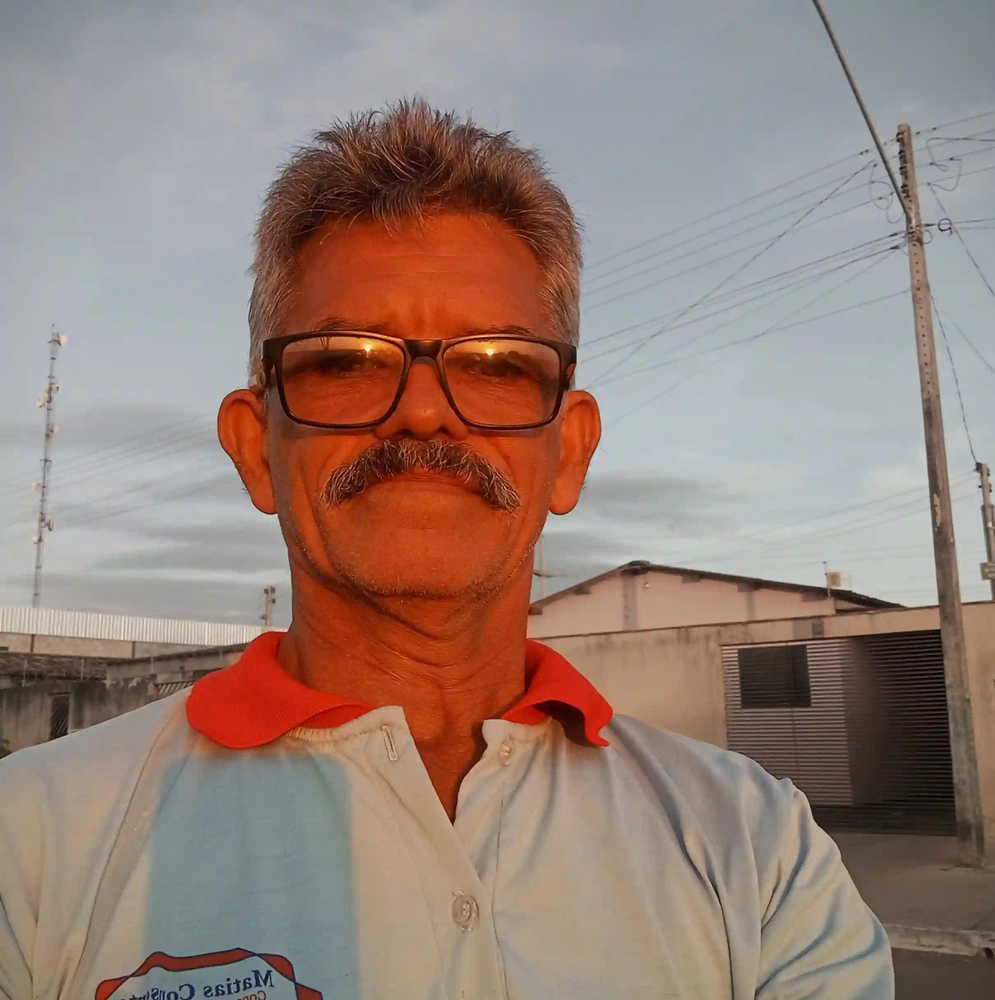

Sua Máquina de Lavar Parou?
Não deixe a roupa acumular! O técnico Matias resolve rápido, na comodidade da sua casa e com garantia.
+23 Anos
De experiência na região
Diagnóstico Preciso
Problema real e sem sustos
Garantia 90 Dias
Nota e confiança total
O que nós arrumamos?
Reparamos todas as marcas famosas de lavadoras (Brastemp, Electrolux, Consul, Panasonic, entre outras).
Não Liga ou Para no Meio?
Testamos e consertamos sua placa eletrônica e motor com peças selecionadas pra evitar que pare novamente.
Não Centrifuga / Vazando
Acabamos com vazamentos de água e resolvemos as travas de tampa e bombas de dreno.
Lava e Seca com Erro
O painel deu código de Erro e parou? Especialistas em sensores e módulos de Lava e Seca.

Seu Técnico de Confiança
Há mais de duas décadas, Matias se dedica a resolver problemas de eletrodomésticos, especialmente as Máquinas e Tanquinhos em Luziânia. A reputação foi inteiramente construída na honestidade, agilidade e para que você não perca seu fim de semana lidando com roupas sujas.
Falar direto com o MatiasPasso a Passo Rápido
O método para a sua lavadora funcionar no estalo em 4 passos.
1. Nos mande um Zap
Clique para falar direto. Sem robôs.
2. Conte o Defeito
O que aconteceu? Mande foto ou áudio e agendamos o horário.
3. Orçamento
Chegando, fazemos o diagnóstico transparente lá na hora.
4. Máquina Nova
Tudo aprovado? O serviço é realizado e a garantia assinada.
O que seus vizinhos dizem:
Vai deixar a roupa suja acumular?
A agenda costuma ser preenchida rapidamente em Luziânia. Evite lavar tudo do modo antigo, arrume a máquina agora mesmo!
Falar com Especialista